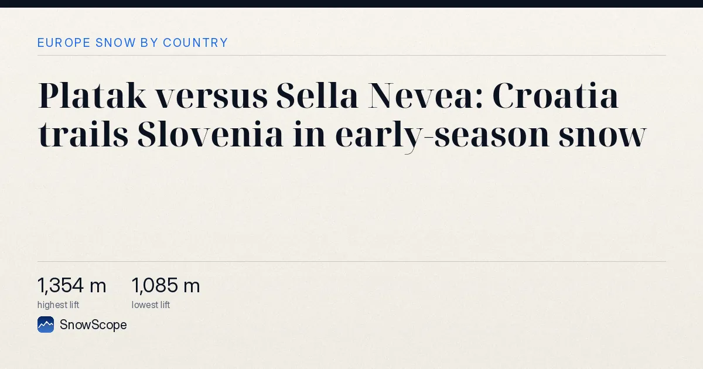

Platak versus Sella Nevea: Croatia trails Slovenia in early-season snow
Platak sits at 3 cm today, scraped together from minimal snowfall in the past three days. Over the border in Slovenia, Sella Nevea holds 42 cm—a stark gap that reflects how the first snow of the season landed harder in the Julian Alps than in the Dinaric ranges.
See the live snow forecast for Platak in the SnowScope appSnow depth, powder alerts and the 3D map, free.
Croatia versus Slovenia: the border divide
Satellite data from today shows the difference clearly. Croatia has snow on about 100 km2, or 1 percent of the mapped area. Slovenia covers 26 percent white. The pattern is not random: Slovenia's mountains rose into the right air mass; Croatia's did not, or not yet.
Platak and Sljeme, Croatia's two measurable spots, both logged 3 cm depth as of today. Platak saw 4 cm fall in the past 72 hours; Sljeme saw none in the same window. Neither is building a base. Across the border, Sella Nevea—Slovenia's highest ski resort—has absorbed far more, sitting at 42 cm and fed by 7 cm in the past three days alone.
The Dinara range, Croatia's current snow leader, holds 8 cm of new snow over 72 hours. That is real output from our model, but spread across a range, not concentrated at a resort. Gorski kotar and the Velebit follow with 7 cm and 4 cm respectively. Slovenia's story is similar in shape—mountains caught more—but higher in absolute numbers.
| Country | White | Deepest resort | Next 7 days |
|---|---|---|---|
| Croatia | 1 % | Platak | 33 cm |
| Slovenia | 26 % | Sella Nevea | 37 cm |
| Bosnia and Herzegovina | 0 % | OC Bjelašnica ZOI '84 | 28 cm |

What happens next: the thaw before the storm
Neither country will see much snow in the next three days. Croatia's forecast shows 3 to 8 cm over the next 72 hours; Slovenia expects up to 37 cm. But a brief warm spell is coming first. Both borders will see temperatures climb and existing snow shrink before the real event arrives.
The turning point comes on 28 November. Croatia's models show 14 cm falling on that day alone—the snowiest single day of the next week. Slovenia will also see significant accumulation later in the week, but the timing and amount still depend on exact storm track. By then, both countries may have wiped the slate clean with the mid-week thaw.
Where Croatia's snow is hiding
Most of Croatia's current snow sits above 1000 m elevation. The band from 1000 to 1500 m shows 5 percent cover, mostly in the mountains we named. Below that, the land is green.
Platak, at 1354 m, is the higher of the two resorts and holds more. Its next three days should bring 8 cm—better than Sljeme, which sits at 1029 m and expects only 3 cm. Height matters now: low slopes are racing the sun. Early-season snow is thin everywhere; rocks are close beneath the surface on the lower ground.
The trend: a sudden return after a week of melting
One week ago, on 16 November, Croatia had 880 km2 of snow cover. By 20 November, that had vanished almost entirely. Yesterday, 100 km2 crept back—today, that number held steady at 100 km2. The swings are sharp in autumn.
Platak leads today's measurements at 3 cm, as it has for the past few days. Sljeme dipped to 5 cm by 21 November but has since fallen back to 3 cm. Neither resort shows the building trend you would want to see in late November. Both are dependent on what arrives next week.
Second week: when the pattern changes
The first seven days ahead of this post hold up to 33 cm maximum in Croatia. The second week—from 30 November to 6 December—shows a weaker pattern: 16 cm maximum. This is a window, not a guarantee. If a ridge of high pressure builds in early December, that forecast will collapse. Forecasts can shift.
What to watch
Watch Slovenia's forecast closely: if it softens, Croatia's will likely soften too. The storms that build snow in the Julian Alps often track south. Watch the thaw this week—if it cuts too deep, 28 November will need to deliver fully, or the season will start late.
For now, Croatia is waiting. Slovenia has a small head start. By early December, that gap may close, or it may widen. The mountains are only just beginning to listen to the winter sky.
Tips for skiers
- If you plan to ski in the next three days, choose Platak over Sljeme: it has 3 cm at a higher elevation (1354 m) and expects 8 cm by day 3, versus Sljeme's 3 cm depth and 3 cm forecast. Lower slopes will expose rocks.
- Watch for the mid-week thaw. Snow accumulated now may vanish; the real base will likely begin on or after 28 November. Avoid early-season couloirs on thin cover.
- Compare the week ahead with Slovenia: if Sella Nevea's forecast drops sharply, expect the same in Croatia. Cross-border patterns move together.
- For off-piste travel, check the official avalanche bulletin before heading into the Dinara, Gorski kotar or Velebit. Early-season instability is common on new snow over wet ground.
- By early December, revisit the forecast: the week 2 signal is weak (16 cm max). If that holds, the season will start slowly in both countries.
About these numbers
Resort snow depths are the deepest snow on the resort's upper slopes from the SnowScope snow model (about 1 km, run of 22 November); they are estimates for an area, not a measurement at one point. Station values are measurements on the date shown. Forecasts can change. Always read the official avalanche bulletin before going off-piste.
Cite this report
For research, teaching or the press: the numbers and charts are free to reuse under CC BY 4.0 with this citation.
SnowScope (2026), Platak versus Sella Nevea: Croatia trails Slovenia in early-season snow, https://snowscope.app/blog/en/2026/11/croatia-snow-vs-neighbours-22-november-2026.html, accessed 2026-11-22
SnowScope (Atlas Labs). (2026, November 22). Platak versus Sella Nevea: Croatia trails Slovenia in early-season snow. SnowScope snow reports. https://snowscope.app/blog/en/2026/11/croatia-snow-vs-neighbours-22-november-2026.html
BibTeX
@misc{snowscope2026croatiasnowvsneighbours2,
author = {{SnowScope (Atlas Labs)}},
title = {Platak versus Sella Nevea: Croatia trails Slovenia in early-season snow},
year = {2026},
month = nov,
howpublished = {\url{https://snowscope.app/blog/en/2026/11/croatia-snow-vs-neighbours-22-november-2026.html}},
note = {Published 2026-11-23 00:50 UTC; accessed 2026-11-22}
}· CC BY 4.0 · Methods, data and tools →
Platak: snow and temperature by height, this winter vs last (tools) →
Follow Platak
Free: a message when fresh snow is coming, and the forecast every morning.
More snow reports

Snow is falling on Slovenia's ski mountains today: about 37 cm on Kanin and 21 cm on Krvavec. Where the snow lies, how it compares with past winters, and the next snowy day.

Tornik on Zlatibor had up to 39 cm on its upper slopes on 15 November 2026; by Wednesday it had melted. Kopaonik barely turned white. The week day by day and what comes next.

Savin Kuk above Žabljak picked up 22 cm of snow from 13 to 19 November and still has 6 cm today. Kolašin 1450 and 1600 are bare. The week day by day, and the next chances.